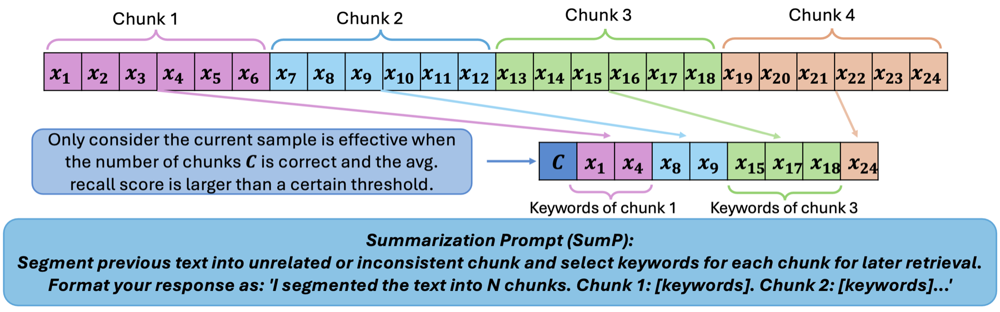

Why it matters왜 중요한가
In head-level KV eviction the pipeline is settled; what decides the result is the probe that ranks the heads.
헤드 단위 KV 축출에서 파이프라인은 이미 정해져 있다. 결과를 가르는 건 헤드를 줄 세우는 진단 과제다.
Retrieval heads, HeadKV's R2 (retrieval-reasoning) heads and DuoAttention all find their important heads with needle-in-a-haystack-style tasks, which reward heads that copy a matching span. Tasks like MRCR, or ETHIC's organizing and attributing tasks, need heads that gather information from across a long span. The paper's claim is that a segment-and-summarize probe ranks heads differently. Its top 20% overlaps with retrieval and R2 heads, but the 20–60% band diverges (Figure 2, right), and it puts more budget in early layers (Figure 3). For this archive, it is the probe-based counterpart to RLKV (2510.08525, "Which Heads Matter for Reasoning?"), which learns head importance with RL (reinforcement learning). It also follows KV-COBRA (2609.24298), which chose each head's rank and bit-width. Here the per-head quantity is the number of tokens kept.
검색 헤드(retrieval head), HeadKV의 R2(검색·추론) 헤드, DuoAttention은 모두 바늘 찾기(needle-in-a-haystack)식 과제로 중요한 헤드를 찾는다. 이런 과제는 일치하는 구간을 그대로 베껴 오는 헤드에 점수를 준다. 그런데 MRCR이나 ETHIC의 정리·출처 찾기 과제에는 긴 구간 곳곳에서 정보를 모으는 헤드가 필요하다. 논문의 주장은 "나누고 요약하기" 진단이 헤드를 다르게 줄 세운다는 것이다. 상위 20%는 검색 헤드·R2 헤드와 많이 겹치지만, 20–60% 구간에서는 갈라지고(Figure 2 오른쪽), 앞쪽 층에 예산을 더 준다(Figure 3). 이 아카이브에서는 RLKV(2510.08525, "Which Heads Matter for Reasoning?")의 짝이다. RLKV는 헤드 중요도를 강화학습으로 배우고, 이 논문은 진단 과제로 잰다. 헤드마다 랭크와 비트 수를 정한 KV-COBRA(2609.24298)의 다음 칸이기도 하다. 여기서 헤드마다 정하는 값은 남길 토큰 수다.

By the numbers핵심 숫자
The longer the context, the bigger the lead문맥이 길수록 앞선다
| Method | 64k | 128k | 256k | 512k | 1M |
|---|---|---|---|---|---|
| Full KV | 95.01 | 96.38 | 88.6 | 63.84 | 43.29 |
| AdaKV | 28.34 | 29.56 | 21.99 | 15.28 | 10.98 |
| DuoAttention (R2 split)(R2로 분할) | 85.80 | 89.82 | 73.78 | 39.10 | 24.73 |
| HeadKV | 68.52 | 74.81 | 66.98 | 44.36 | 28.90 |
| SGD-KV | 85.09 | 87.19 | 83.29 | 48.86 | 34.16 |
In one diagram한 장의 그림
The idea in three pieces아이디어를 셋으로 쪼개면
A probe that needs aggregation모으기가 필요한 진단 과제
A needle task rewards heads that copy. The chunk task makes the model first see the document's structure (how many chunks) and then boil each chunk down to keywords. Scoring by the strongest keyword → source link finds heads that pick out the salient token of a span. The ranking is stable: two disjoint 100-sample Dolly subsets agree on the top heads with IoU (intersection over union, the overlap of two top-k sets) above 0.9, and IoU across datasets stays high at the top of the ranking.
바늘 찾기 과제는 베껴 오는 헤드에 점수를 준다. 덩어리 과제는 모델이 먼저 문서 구조(덩어리가 몇 개인지)를 보고, 그다음 덩어리마다 키워드로 줄이게 한다. 키워드 → 원문 연결 중 가장 강한 것으로 점수를 매기므로, 한 구간에서 핵심 토큰을 집어내는 헤드가 높은 점수를 받는다. 순위는 안정적이다. 겹치지 않는 Dolly 100샘플 묶음 둘이 상위 헤드에서 IoU(두 상위 k 집합의 겹침 비율) 0.9 넘게 일치하고, 데이터셋이 달라도 순위 위쪽의 IoU는 높게 유지된다.
Graded budgets, not a binary split둘로 가르지 않고 비율로 나눈다
DuoAttention gives each head either the full cache or just the sink plus recent tokens. SGD-KV gives each head a continuous share, and only 3.57% of KV heads end up with the full cache (Table 5). On Qwen3-32B with chain-of-thought, graded allocation clearly beats the binary split (64k: SGD-KV 40.13, HeadKV 34.90, DuoAttention 28.37). Zeroing every head below the mean score helps up to 64k but hurts beyond 128k (512k: 48.86 → 32.22), so low-score heads still matter for very long contexts.
DuoAttention은 헤드마다 캐시 전체를 주거나, 처음 토큰과 최근 토큰만 준다. SGD-KV는 헤드마다 연속적인 몫을 주고, 캐시 전체를 받는 KV 헤드는 3.57%뿐이다(Table 5). 사고 과정(chain-of-thought)을 쓰는 Qwen3-32B에서 비율 배분이 이분법보다 확실히 낫다(64k: SGD-KV 40.13, HeadKV 34.90, DuoAttention 28.37). 평균보다 점수 낮은 헤드를 모두 0으로 두면 64k까지는 좋아지지만 128k를 넘으면 나빠진다(512k: 48.86 → 32.22). 아주 긴 문맥에서는 점수 낮은 헤드도 필요하다.
The probe prompt works as a stand-in question진단 프롬프트가 질문 대역을 한다
Token selection normally looks at the last 128 tokens, which include the real question. Compress before the question arrives (the last 128 context tokens instead) and long contexts suffer: 256k drops from 83.29 to 71.06. Using the fixed summarization prompt as the observation window recovers most of it (80.65). SGD-KV beats HeadKV in all three settings (Table 3).
토큰 선택은 보통 실제 질문이 들어 있는 마지막 128 토큰을 본다. 질문이 오기 전에 압축하면(대신 문맥의 마지막 128 토큰을 보면) 긴 문맥에서 손해를 본다. 256k가 83.29에서 71.06으로 떨어진다. 고정된 요약 프롬프트를 관찰 창으로 쓰면 대부분 되찾는다(80.65). 세 설정 모두에서 SGD-KV가 HeadKV보다 낫다(Table 3).
How it works어떻게 작동하나
- Build probe data.진단 데이터를 만든다. Concatenate short documents from six summarization sets (DialogSum, SAMSum, CNN/DailyMail, XSum, Dolly's summarization split, WikiLingua) and record the document boundaries. 요약 데이터셋 6개(DialogSum, SAMSum, CNN/DailyMail, XSum, Dolly의 요약 부분, WikiLingua)에서 짧은 문서를 이어 붙이고 문서 경계를 기록한다.
- Run the probe and filter.진단을 돌리고 거른다. Prompt for "N chunks, keywords per chunk"; keep only samples with the right chunk count and keyword recall above a threshold. "덩어리 N개, 덩어리별 키워드"를 묻고, 덩어리 수가 맞고 키워드 재현율이 기준을 넘는 샘플만 남긴다.
- Score heads.헤드에 점수를 매긴다. For each generated keyword, take the head's strongest attention to any occurrence of that keyword in its source chunk. Average over keywords, chunks and samples, then max-pool to KV heads. 생성된 키워드마다, 원문 덩어리 속 같은 키워드로 가는 어텐션 중 가장 강한 값을 헤드별로 잰다. 키워드·덩어리·샘플에 걸쳐 평균하고, KV 헤드 단위로 최댓값을 모은다.
- Allocate.배분한다. Normalize the scores and fix the sink and recent window (1024 + 1024 tokens for 7B, 128 + 128 for 32B). Split the middle budget by score, then water-fill the heads that were given more than the middle length. 점수를 정규화하고, 처음 토큰과 최근 창을 고정한다(7B는 1024 + 1024, 32B는 128 + 128 토큰). 가운데 예산을 점수대로 나누고, 가운데 길이보다 많이 받은 헤드는 물 채우기식으로 재분배한다.
- Evict per head.헤드마다 축출한다. Within each budget, SnapKV's cumulative attention from the observation window decides which tokens stay. Eviction happens before the KV heads are repeated, so the saving is on top of GQA. 각 예산 안에서 관찰 창의 누적 어텐션(SnapKV)으로 남길 토큰을 정한다. 축출은 KV 헤드를 복제하기 전에 하므로, GQA로 이미 줄어든 캐시에서 추가로 줄인다.
What to take away그래서, 가져갈 것
The probe is a design axis in its own right. Same HeadKV-style pipeline, different probe, and MRCR at 256k moves from 66.98 to 83.29. Whatever task you probe with defines what an "important" head is, so pick one that looks like your workload.
진단 과제 자체가 하나의 설계 축이다. 같은 HeadKV식 파이프라인에 진단 과제만 바꿨는데 MRCR 256k가 66.98에서 83.29로 움직인다. 어떤 과제로 진단하느냐가 "중요한" 헤드의 정의를 정하므로, 실제 작업과 닮은 과제를 골라야 한다.
A question-free compression prompt matters beyond single-model serving. In a KV relay between agents, the sender compresses before the receiver's question exists. The proxy-query result (80.65 vs 71.06 at 256k) suggests a generic "segment and tag" prompt is a reasonable default for that case.
질문 없이 쓰는 압축 프롬프트는 모델 하나로 서빙할 때보다 더 넓게 쓰인다. 에이전트끼리 KV를 넘겨주는 구조에서는, 받는 쪽의 질문이 생기기 전에 보내는 쪽이 압축한다. 대역 질문 결과(256k에서 80.65 대 71.06)는 범용 "나누고 표시하기" 프롬프트가 그 경우의 무난한 기본값일 수 있음을 보여 준다.
The paper's best number is not in its main table. Weighting the GQA pooling by the summarization score ("Ipt., max") gives 57.23 at 512k instead of 48.86, and 91.16 at 128k instead of 87.19. Anyone reproducing this should start from that variant, not the one in Table 1.
논문의 가장 좋은 숫자는 주요 표에 없다. GQA 풀링을 요약 점수로 가중하면("Ipt., max") 512k에서 48.86 대신 57.23, 128k에서 87.19 대신 91.16이 나온다. 재현한다면 Table 1의 버전이 아니라 이 변형에서 시작하는 게 맞다.